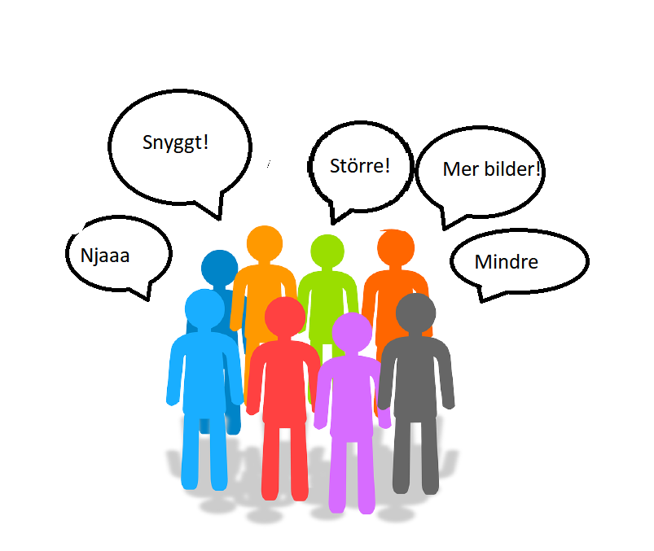

Ett resultat i målgruppsanalysen är "användarnas behov" (user needs). Ge en kort beskrivning av vad detta är.
Med användarens behov menar man det som den typiske användaren behöver kunna göra på webbplatsen. Vad vill användaren kunna göra och vad för funktioner vill användaren ska finnas? Det skiljer sig såklart åt från sida till sida. Om vi fortsätter med e-handel exemplet från Fråga 2, så måste man på en sådan sida exempelvis kunna:
- Beställa produkter.
- Se lagerstatus.
- Se priser.
- Se relevant information om produkten (specifikationer).
I en kravspecifikation är det viktigt att kraven skrivs, så att de är mätbara.
Vad menas med det?
Ett mätbart krav innebär att det inte är abstrakt eller att det skapar möjligheter för misstolkning. Man ska inte ha med adjektiv eftersom dessa är öppna för individuell tolkning.
Ge ett exempel på ett mätbart krav.
Allting som man enkelt kan ’checka’ av. Att det ska finnas bilder eller att en produkt ska länka till tillverkarens hemsida. Sådant kan inte tolkas fel. Antingen finns bilden eller inte. Antingen så har man lagt in länken till tillverkaren eller inte.